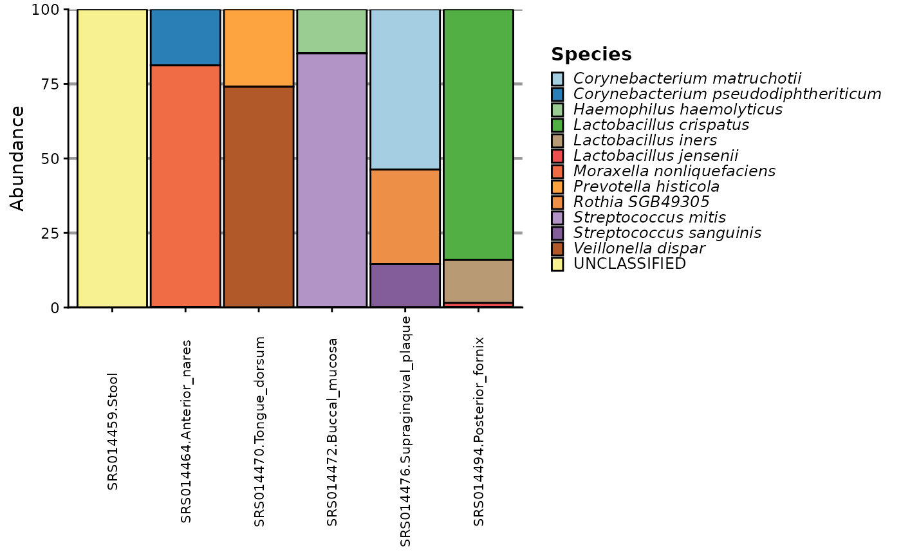

Plot Taxonomic Composition of a microEDA/phyloseq Object
Source:R/visualisation.R
plot_taxa_barchart.RdCreates a ggplot2-based stacked bar chart showing the abundance of taxa across samples, optionally grouped and faceted by metadata variables.
Usage
plot_taxa_barchart(
me,
tax_rank,
group_var = NULL,
facet_var = NULL,
plot_title = NULL,
group_labels = NULL,
show_samples = TRUE,
min_abundance = 0,
min_prevalence = 0,
as_relative = TRUE,
filter_by_group = FALSE,
...
)Arguments
- me
A
microEDAorphyloseqobject containing OTU table, taxonomy, and sample data.- tax_rank
Characterstring specifying the taxonomic rank to plot (e.g., "Phylum", "Family"). Must be a valid rank in the taxonomy table.- group_var
Characterstring (optional) indicating a sample metadata variable to group samples.- facet_var
Characterstring (optional) indicating a metadata variable for additional faceting/grouping ofgroup_var.- plot_title
Characterstring for the main plot title.- group_labels
Named character
vectormapping old group names to new labels (e.g.,c("Old" = "New")).- show_samples
Logical. Control sample label visibility.- min_abundance
Numericvalue. Minimum abundance threshold for a feature to be retained. Must be non-negative. Features with abundance below this are considered absent.- min_prevalence
Numericvalue. Minimum prevalence required for retention. If value is < 1, interpreted as proportion of samples; otherwise, as absolute number of samples.- as_relative
Logical. IfTRUE, applies relative abundance transformation (TSS) to the input counts. IfFALSE, uses raw counts. (Default:TRUE).- filter_by_group
Logical. IfFALSE(default), filtering is applied globally across all samples even ifgroup_varis specified. This allows usinggroup_varfor stratification in plotting without affecting the filtering scope. IfTRUE, filtering is applied within each group defined bygroup_varandgroup_requirement. See filter_features for more details on filtering arguments.- ...
Additional arguments for fine-tuning. Can include:
sample_text: Font size for sample labels (Default: 8).strip_angle: Angle of facet strip text (Default: 90).legend_text: Font size for legend (Default: 9).legend_key: Size of legend keys (Default: 8).bar_width: Width of bars (Default: 0.95).ntaxa: Number of top taxa to display (Default: 30).pal: Color palette name (passed toRColorBrewer, default: "Paired"). Must be a valid palette name with at least 12 colors.abundance_criterion:Characterstring. Criterion to use for filtering:prevalence:Retain features present in at least
min_prevalencesamples (within group ifgroup_varis used) and with abundance >=min_abundancein those samples.mean:Also requires that the mean abundance across samples (or group) is >=
min_abundance.
Default:
"prevalence".group_requirement:Characterstring. Whengroup_varis specified, determines whether the filter criterion must be met in"any"group or"all"groups. Default:"any".keep_filtered: Whether to keep filtered out taxa as "Other" (Default:TRUE). Takes effect only formicroEDAobjects.rm_missing:Logical.IfTRUE, removes taxa with missing/unclassified entries at the specified rank. IfFALSE, fills missing values by propagating the last known ancestor, labeling them as "Unclassified Last_Known_Parent_Clade" (e.g., "Unclassified Enterobacteriaceae"). (Default:FALSE).process_taxon: Whether to clean taxon names (remove underscores, return in italic). (Default:TRUE).
Details
The function prepares the taxonomic profile by:
Filtering taxa by
min_abundance,min_prevalence.Aggregating counts by
tax_rank.Reducing the total number of taxa to no more than
ntaxa.Optionally applies relative abundance transformation (TSS) to the data.
If
group_varis specified, samples are grouped by that variable.If
facet_varis provided, an additionalfacet_wraplayer is added with markdown formatting.Sample counts per group are appended to group labels (e.g., "Control (n=10)").
Examples
# Basic plot at Species level
mpa <- microEDA(merged_metaphlan_profiles)
plot_taxa_barchart(mpa, "Species")
#> Warning: Both 'min_abundance' and 'min_prevalence' are 0. No filtering will be applied.
#> Plotting data...
